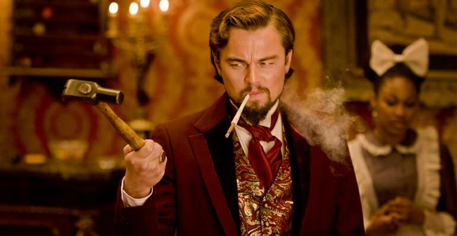

5 cenas improvisadas do cinema que se tornaram icônicas
postado 15 Maio 2022 Seja com Batman, Thor ou até O Senhor dos Anéis, algumas das cenas mais aclamadas do cinema nasceram de inspirações momentâneas dos atores...
Leia maisStranger Things 4ª temporada: Quem é o novo vilão da série? Conheça Eddie, vivido por ator de Game of Thrones
postado 14 Maio 2022Interpretado por Joe Quinn, de Game of Thrones, o personagem será o líder metaleiro do clube de Dungeons & Dragons de Hawkins High, que inclui Mike (Finn Wolfhard) e Dustin (Gaten Matarazzo).
Leia mais5 filmes de terror angustiantes para assistir na sexta-feira 13
postado 13 Maio 2022
De Um Lugar Silencioso a O Iluminado, separamos filmes de terror imperdíveis e angustiantes para embalar sua sexta-feira 13.
Leia maisPostagens recentes
Por que As Branquelas não teve continuação até hoje?
Desde que a comédia foi lançada, no início dos anos 2000, os fãs pedem que um segundo filme seja feito pelo ator Marlon Wayans e seu irmão, Shawn Wayans...
Leia maisO Homem do Norte colocou o elenco em situações extremas: "Foi difícil sobreviver", revela Anya Taylor-Joy (Entrevista Exclusiva)
Em entrevista ao AdoroCinema, Anya Taylor-Joy, Alexander Skarsgård e Robert Eggers falaram dos bastidores de O Homem do Norte.
Leia mais